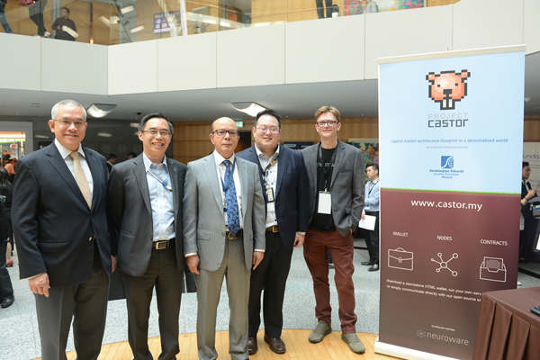

Friday, 31st Nov, 2018
We've been working closely with the Securities Commission of Malaysia for over two years now. It started with complimentary education and awareness regarding distributed ledgers as a whole, which led to more extensive workshops and ideation sessions around the topic of blockchains. This early groundwork was conducted under our R1 training and consultation brand, which eventually led to the formalization of a long-term strategy to research and develop a feasibility study-group for decentralized secondary markets. It was for this pilot project that our Cortex product-line was selected to help manage the network infrastructure used by all of the stakeholders. Earlier this week, at SCxSC2018, the Finance Minister of Malaysia unveiled the first public milestone for this initiative by officially launching the Project Castor community website – http://castor.my
 At the Project Castor booth (from left to right) - Zainal Izlan Zainal Abidin, Deputy Chief Executive of Securities Commission Malaysia (SC), Chin Wei Min, Executive Director, Innovation, Digital & Strategy of SC, Datuk Syed Zaid Albar, Chairman of SC, Chan Zhong Yang, Assistant General Manager, Innovation, Digital & Strategy of SC, Mark Smalley, CEO and co-founder of Neuroware
What we find most exciting is that with a place to call its home, Project Castor has the potential to not only help the equity crowdfunding (ECF) ecosystem, but more importantly, it can now help to improve the capital markets at large. This was an important factor to consider when developing the system, for it meant that it needed to be designed in such a way that was modular enough to be applied to different financial products and services.
This was ultimately accomplished by not only introducing digital identities and token factories supporting both fungible and non fungible assets, but also meant that more specific standalone contracts for escrow, KYC and AML were required. More importantly - this was done by introducing the notion of permission based upgradable contracts.
Another important decision that was made early within the project, was to ensure that all of the applications for each of the different stakeholders could function without any form of database. From logging-in to web-based applications, through to managing media files and analytics - it is all done without storing usernames and passwords anywhere.
The relevant stakeholders include:
- Regulators
- Trustees
- Operators
- Issuers
- Investors
Although the first stage of the project utilized the Dogecoin network as a distributed key value storage system, this blockchain based data was moved to the Ethereum network during stage two so that we could adopt more relevant industry standards such as the ERC20 and ERC721 protocols. With these standards used, investors are able to utilize any wallet that supports these protocols to invest into ECF campaigns and trade equity:
Please reach out to us directly or sign-up over at Project Castor in-order to learn more about this initiative. Private demonstrations and full source code will be released over the coming weeks - once the already available blueprint has been digested by the community. We would like to take this opportunity to thank the innovation team at SC for their relentless pursuit to not only understand the technology behind the headlines, but in also rolling down their sleeves and ensuring that they were involved with every decision along the way. This allowed the project to continue to evolve whilst opening-up a host of possibilities for the future.